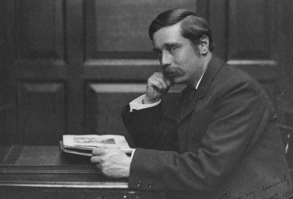

Життєпис
Народився 21 вересня 1866 в передмісті Лондона Бромлі. Його батько, Джозеф Веллс, був садівником, потім професійним гравцем у крикет; пізніше утримував крамницю, проте розорився через травму стегна. Мати, Сара Ніл, щоб утримувати сім'ю працювала служницею в багатому будинку «Аппарк» (пізніше описаному Веллсом в романі «Тоно Бенге»). Батьки не ладнали, бо мати була протестанткою, а батько — вільнодумцем. Однією з умов її роботи було те, що їй не дозволялося мати в маєтку житлову площу для чоловіка та дітей. Після цього вони з Джозефом жили окремо.
До 1893 року відносяться його перші публікації як есеїста і новеліста в популярних газетах і журналах: «Pall Mall Gazette», «Pall Mall Budget». Це дозволяє йому розпрощатися з викладацькою діяльністю і стати журналістом, не обтяженим належністю до будь-якої конкретної агенції (фрилансером). До того ж він отримує замовлення на серію повістей і романів з науковим ухилом.
Протягом творчого життя (з 1895) Веллс написав близько 40 романів і багато оповідань, більше десятка полемічних творів на філософські теми і приблизно стільки ж робіт про перебудову суспільства, дві всесвітні історії, близько 30 томів з політичними і соціальними прогнозами, більше 30 брошур на теми про Фабіанське товариство, озброєння, націоналізм, загальний мир тощо, 3 книги для дітей і автобіографію.
Його першим художнім твором був роман «Машина часу» (The Time Machine, 1895) — про подорож винахідника у віддалене майбутнє. Потім з'явилися «Острів доктора Моро» (The Island of Dr. Moreau, 1896), «Людина-невидимка» (The Invisible Man, 1897), «Війна світів» (The War of the Worlds, 1898), «Перші люди на Місяці» (The First Men in the Moon, 1901, екранізований 2010 року каналом ВВС — «Перші люди на Місяці»). Ці романи забезпечили письменникові славу найзначнішого експериментатора в жанрі наукової фантастики і показали його здатність зробити правдоподібною найзухвалішу вигадку. Згодом у подібних творах, наприклад у романі «Звільнений світ» (The World Set Free, 1914), він сполучив наукову вірогідність із політичними прогнозами про прийдешню всесвітню державу.
Творчість
Тематика
Літературна творчість Герберта Веллса включає багато жанрів: наукову фантастику, фентезі, антиутопію, сатиру та трагедію. Знаменитий передусім як письменник-фантаст, він писав багато нон-фікшн, включаючи біографії, автобіографії, соціальні коментарі та підручники. Разом із французьким письменником Жулем Верном поділяє титул «батька наукової фантастики».

Роман «Машина часу» (1895) одразу ж мав успіх і закріпив за Веллсом репутацію плідного автора оригінальних ідей, що продовжилося в «Чудесному візиті» (1895), «Острові доктора Моро» (1896), «Невидимцеві» (1897), «Війні світів» (1898), «Перших людях на Місяці» (1901), «Їжі богів» (1904). Фантастика Веллса, на відміну від творчості Жуля Верна, більш сатирична та песимістична, що відповідає поширеним у 1890-х роках настроям. Однак, любов до біології спонукала Веллса в цілому бачити майбутнє позитивним, хоча шлях до нього вбачався складним.
Із 1900-х він вирішив відмовитися від наукової фантастики на користь замальовок життя нижчого середнього класу, особливо в «Любов і містер Льюїшем» (1900), «Кіппс: Історія простої душі» (1905) та «Історія містера Поллі» (1910). У цих романах і в «Тоно Бенге» (1909) він спирався на спогади про власне життя. Приблизно в цей час він став активним соціалістом і в 1903 році приєднався до Фабіанського товариства, хоча незабаром почав критикувати його методи. Його конфлікт з однодумцями в 1906—1907 роках переказується в романі «Новий Макіавеллі» (1911). Його пізніші романи — це здебільшого дискусії на соціальні чи політичні теми того часу: «Бун» (1915), «Містер Брітлінг бачить це» (1916).
Перша світова війна похитнула віру Веллса в навіть короткочасний самостійний прогрес людства, і в наступних роботах він пропагував поширення знань і освіту як засіб відвернення катастроф. Веллс розпочав амбітну роботу з народної освіти, головними підсумками якої стали книги «Нарис історії» (1920; переглянуто в 1931), «Наука про життя» (1931), написана спільно з Джуліаном Гакслі та Джорджем Філіпом Веллсом (його старшим сином від другої дружини), а також «Праця, багатство і щастя людства» (1932). У той же час він продовжував публікувати художні твори, в яких його дар оповіді та діалогу майже повністю поступався місцем полеміці.

У 1936 році за сценарієм Веллса знято фільм «Прийдешнє». Тут Веллс повернувся до утопізму деяких попередніх книг, але в цілому його світогляд поступово ставав менш оптимістичним, і частина пізніших романів містять багато гіркої сатири. Страх перед трагічним неправильним поворотом у розвитку людства панує в його романах і байках, написаних наприкінці 1930-х років. З початком Другої світової війни він втратив впевненість у завтрашньому дні, і в «Розум на краю своєї натягнутої вузди» (1945) зобразив похмуре бачення майбутнього світу, де природа знищує людство.
Передбачення
Герберт Веллс — автор багатьох наукових передбачень, хоча він більше цікавився тим, якими можуть бути наслідки розвитку технологій, менше уваги приділяючи деталям їхньої роботи. За «Острів доктора Моро» (1896) Веллсу іноді приписують передбачення генної інженерії (хоча в романі перетворення тварин на людей відбувалося хірургічним шляхом). У «Війні світів» (1898) показано інопланетні пристрої, що за дією нагадують лазери чи мікрохвильову зброю. В «Коли сплячий прокидається» (1899) Веллс передбачив аудіокниги, літаки та телевізори , а в «Люди як боги» (1923) описав голосову пошту. В «Звільненому світі» (1913) змальовано атомні бомби (хоча в творі їхня руйнівна сила та розміри набагато менші, ніж на практиці, а вибух горів багато днів) та доктрину взаємного знищення. У «Війні в повітрі» (1908) він передбачив використання воєнних літаків. Разом з тим машина часу та невидимість людини — найвідоміші винаходи в творах Веллса, лишилися нездійсненими. У збірці «Світовий розум» (1938) письменник передбачив всесвітню мережу. Веллсу часто приписується введення в широкий обіг слова «секс» у значенні статевої активності через роман «Любов і містер Льюїшем» (1900).
Він вважав, що за допомогою того, що спочатку назвав «індуктивною історією», а пізніше «екологією людини» можна скласти схему можливостей майбутнього та спонукати людей розумно використовувати ці можливості. Таким чином Веллс стоїть біля витоків футурології. Іноді саме Веллсу приписується ініціатива в створенні ООН, що відповідає його мрії про «світову державу».
Основні твори
Науково-фантастичні романи:
- Машина часу (The Time Machine, 1895)
- Острів доктора Моро (The Island of Dr. Moreau, 1896)
- Невидимець (The Invisible Man, 1897)
- Війна світів (The War of the Worlds, 1898)
- Перші люди на Місяці (The First Men in the Moon, 1901)
- Звільнений світ (The World Set Free, 1914)
- Любов і містер Льюїшем (Love and Mr. Lewisham, 1900)
- Кіппс (Kipps, the Story of a Simple Soul, 1905)
- Енн Вероніка (Ann Veronica, 1909)
- Тоно-Бунге (Tono-Bungay, 1909)
- Історія Містера Поллі (The History of Mr. Polly, 1910)
- Новий Макіавеллі (The New Machiavelli, 1911)
- Чудове дослідження (The Research Magnificent, 1915)
- Проникливість пана Брітлінга (Mr. Britling Sees It Through, 1916)
- Джоан і Пітер (Joan and Peter, 1918)
- Нарис історії (The Outline of History, 1920)